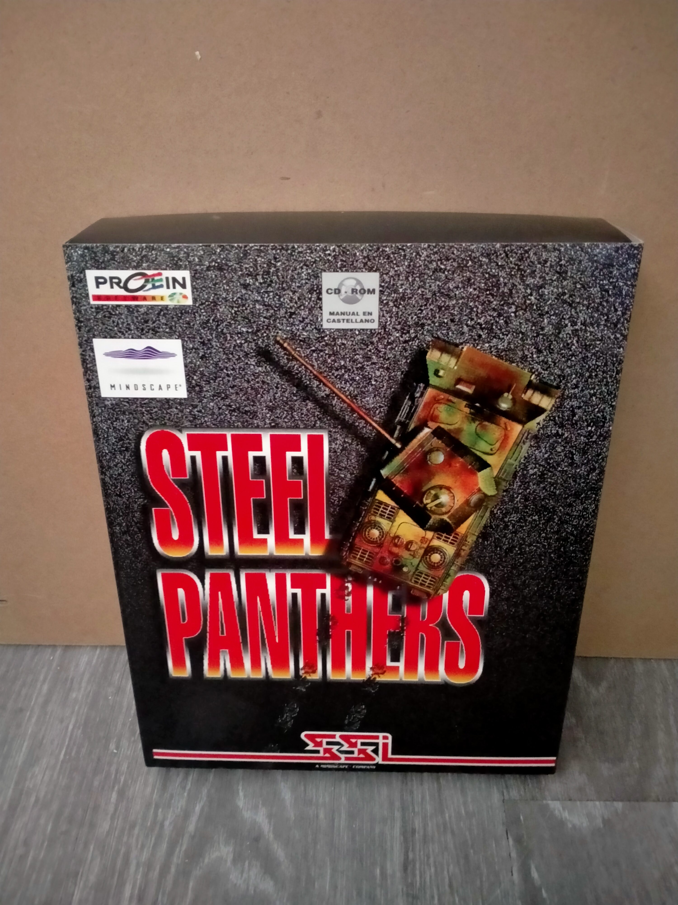

Ficha #000000
Steel Panthers
Wargame táctico ambientado en la Segunda Guerra Mundial centrado en combates acorazados y operaciones combinadas. El jugador dirige pelotones y batallones completos en escenarios históricos situados en Europa y el Pacífico entre 1939 y 1945. Destaca por su profundidad estratégica, amplio catálogo de unidades terrestres, editor de escenarios y modo campaña. La edición en CD-ROM incluye el Campaign Disk adicional, ampliando las posibilidades estratégicas y la rejugabilidad del título.
- Formato
- Big Box
- Plataforma
- Win95
- Género
- Estrategia Wargame Táctica por turnos Segunda Guerra Mundial
- Serie
- Todos Big Box
- Desarrollador
- Strategic Simulations Inc. (SSI)
- Distribuidor
- Proein
- EAN
- 5018247953220
Contenido de la edición
- Pendiente de documentación.
Preservación
- Protección
- No determinado
- Formato recomendado
- No aplica
- Jugable en virtualización
- No determinado
Pendiente de documentación